court-filing-fee-sheet-build PASS 1.0
grade table_goldintent createdomain legaldifficulty d5ambiguity a3voice politeapps libreoffice_calc + files + libreoffice_writerbatch wave2-main-s3
Please finish this filing sheet: fill Fee from the fee schedule text file in the same folder (match on Document Type), then Total = Fee x Copies, and put the grand total of Total in E12. Round money to the cent.
task config + evaluator
{
"config": [
{
"type": "execute",
"parameters": {
"command": "mkdir -p '/home/user/Documents/filings' && rm -f '/tmp/__fixture.b64' && printf %s 'Q2xlcmsgZmVlIHNjaGVkdWxlLCBlZmZlY3RpdmUgSmFudWFyeQpDb21wbGFpbnQgPSA0MDIuMDAgcGVyIGNvcHkKTW90aW9uID0gNDguNTAgcGVyIGNvcHkKU3VicG9lbmEgPSAzMi4yNSBwZXIgY29weQpBcHBlYWwgTm90aWNlID0gNjA1LjAwIHBlciBjb3B5CldyaXQgPSA5Ni43NSBwZXIgY29weQo=' >> '/tmp/__fixture.b64' && base64 -d '/tmp/__fixture.b64' > '/home/user/Documents/filings/fee_schedule.txt' && rm -f '/tmp/__fixture.b64' && printf %s 'UEsDBBQACAgIAIJoHF0AAAAAAAAAAAAAAAALAAAAX3JlbHMvLnJlbHOtks9qwzAMh+99CqN747SFMUacXsqgtzK6B9BsJTGJ/2BrW/b2M2OwdZSwwY6Wf/r0IdTsZzeJF0rZBq9gU9UgyOtgrO8VPJ7v17ewb1fNA03IJZIHG7MoPT4rGJjjnZRZD+QwVyGSLz9dSA65PFMvI+oRe5Lbur6R6TsD2gumOBoF6Wg2IM5vkX7DDl1nNR2Cfnbk+cqIH4lCxtQTK5gn+RrS+BTCWBUoyOsu27+6mAUXR4wGGaUOidYxFUhiS/nLqnSfSjl/JJa8dv+5I5qZvCGzrIQxfhqtGnlxC+07UEsHCGu/dgTfAAAAQgIAAFBLAwQUAAgICACCaBxdAAAAAAAAAAAAAAAADwAAAHhsL3dvcmtib29rLnhtbI1SyW7bMBC99ysE3m0tTlTHsBy4coQE6BLEaXIsKGlksaZIgRxvLfrvHVFWkqI99CCRs/DNm5k3vz420tuDsUKrhIXjgHmgCl0KtUnY18dsNGWeRa5KLrWChJ3AsuvFu/lBm22u9daj98omrEZsZ75vixoabse6BUWRSpuGI5lm49vWAC9tDYCN9KMgiP2GC8V6hJn5HwxdVaKAlS52DSjsQQxIjsTe1qK1bDGvhISnviGPt+1n3hDtlMuC+YsX2vfGy3mx3bUZZSes4tICNVrrw5f8OxRIHXEpmVdyhFQ3LVXIhRR4GnL/wNJIT6geOTvHk4CDfY13poO+1Ub80Aq5XBdGS5kwNLtzWWKMovhXZN1N7JHndnAen4Uq9SFhtKvTm/vBXZ9FiTVtMp5MLwbfLYhNjQmbhlcR85DnD93EEhYH9KwSxqIr4lA4dbIHqtdZ1JD/piO3vOH0lJssjZu08q0CEobnAncllXeqQYrvhRW5JNpmJihg7srIwQ5Y1HNB2xAIxs16p4hH2BEzUH3SJUEsCe0cf1nV2V6BRE5Mx0EQdrBwxI8W3XnWldR0/0tbUuQGejU5YTFvZ0TCfr6PozidxtEoWoaTURjeXI4+TC4uR9lNltH00lV6lf0ikTnUGX1pT9+ioSk8QLU+0X6PveCWjpJPWf3fMfMHWSx+A1BLBwg4RFxzAQIAAHwDAABQSwMEFAAICAgAgmgcXQAAAAAAAAAAAAAAAA0AAAB4bC9zdHlsZXMueG1s7VhdT9swFH3fr7D8PpKWUmBKgxio014mtJZp0rQHkziJhz8i24WGX891nKZJC0zqHlakPtn3+J7jk2tbtRtdLAVHD1QbpuQED45CjKhMVMpkPsG38+nHM4yMJTIlXEk6wRU1+CL+EBlbcTorKLUIFKSZ4MLa8lMQmKSggpgjVVIJI5nSglgIdR6YUlOSGkcSPBiG4TgQhEkcR3IhpsIalKiFtGCjhZBvvqYAjkcYebkrlYKVL1RSTTgO4ihoBOIoU3KtM8IeiCPzhB4IB5HQpUsiqI+v6R/yY4FmRBo3kBHBeOWHhrWwp78tcqmZt9Glh3tDrxtXGsZ5W5oh9kAclcRaquUUAtT051UJ9ZWw4F6mzvtLdq5JNRiedAh1A/PeKZ3CBusurodQykiuJOG35QRnhBuKW+haPcoVGEecZhaENcsL11pVBk7EWiWgs+K4qb1y24HpE8r5zO3Wn9n660MQXWbbu0vWARwC573peqUmIGXJq6lyIlYvaAN8rlN60CVnuRR0I/FGK0sTWx+2Go4jskpEhdLsCaTdAubN5nZn07LEQf57MbJ0ab8rS7wKeHrUpJwD2BaRybSeGMZMoZm8n6spa4ehTGVrA3GV3NN0ZbJgKVA7mcEy26hUuK7TYNc6NT43C9WFu5VabYP3Y2Z4MPOKmZ3P1sHMwczBzMHMwcwuZkbH+/RLORrslZvRXrkZ7pOb8/9sJuhe3/1lvnOPH+x6jV9m2867fv7R+ju40wdNKTsPpLasY9xBkXtqTvA39/LmncrdLRi3TPoo2CZcKSHIKn9w0iMcv0pAv8LfLWncI41fJC20pjKpWs5pjzN6i9Ob66zHO32Jd0N1AmvQUs57FP/0XRcTgvWfJPEzUEsHCD/UgMWRAgAAaREAAFBLAwQUAAgICACCaBxdAAAAAAAAAAAAAAAAGAAAAHhsL3dvcmtzaGVldHMvc2hlZXQxLnhtbL1YTXPbNhC991dweMipET8k6sORlLGluOmME3sqJ5npDSJBETVJMAAo2f71XYAUSQFsR51x5YMlLB5339sFICznH5+z1NpjxgnNF7Y3cG0L5yGNSL5b2N8eb99PbYsLlEcopTle2C+Y2x+Xv8wPlD3xBGNhgYOcL+xEiOLKcXiY4AzxAS1wDjMxZRkSMGQ7hxcMo0g9lKWO77pjJ0MktysPV+wcHzSOSYjXNCwznIvKCcMpEkCfJ6TgR2/P0Vn+IoYOIPXIp0NxXc00/ryR4S8jIaOcxmIQ0qymZqqcObMTnVl4DrEMsaeyeA+OCxC3JSkRL4qjvZwr5w/MikkqMPtCI6hLjFKOYa5AO7zB4luh5sUjfQDDcdpZzp364eU8IpBCWXaL4XhhX3tXnzxPQhTiO8EH3vlu8YQeboFgmSJ+9KeMvzES3ZEcg1Wwsjb+QQ8rmn6GTMDS6k78iSFlRwMjuwQo3uFYNC4F2m5wikOBo+5z96VIIcjmJdvStHEQ4RiVqZAUIBxlR/seGC/sXOYzBZe0kCFWOE2lTtsKJfZ38D8e2dYrpdkmRClkyXPdzvirely3ynzeoRdaqrSAC5iUm2FL6ZO0SLeuLJISIdNbILlxahK2hcC6xy2Zdlw9avGfdUHaeknH3e/HytyqFQOlrhMBSfhBIpFI0gN36rtDzw+aNEFRPmOZcpj2B7CxX6EYR0udflrl+Q7vcQp4RahrgwiVPueEwHIOOeXqv8xuigou61c7DUsuaFYzqyqUkCjCeW9YFTNDz8ASPkmuPrl4kRWSya4FjgbTqczQ24b065B+X8jhYDx5+5DDOuSwJ+Ro4P0PEUd1xFFPxPFgMnz7iEEdMeiJGAy8QC31aglVpy8SaDln9GAxVf4qbrXamlDtQtY4VOh/WdkqvKEORMtwclNyhYCHOVj3S3fu7CXBGnFjIrxTxMpE+KeItYkYniI+mYhRg3AgN02C/AsnyDeIBVqCTMRYk99F5Jr8E3HDC4sbGtQnmjgTMdXEDQ1x/1C50YXFjQzqM02cifC01b8eGer8fnXBhdUFJndtX970QPSNGRjygn554wvLG5vctSPjpgcy0uSNDXlev7zJheVNTO76sWJC9GNlYqgb96ubXljd1FSncb8xIfq5Mj13580urG5mqtNPzR6IfrDMzl2annvpK4Frsp/ql4IejPGj7577s+dd/NbTc6nRfxx6MPoGPIH0r1Gnc8UrGMnFfaH6dyuBfhF67ra/3LW9pW6BJre5gVJGXmkuULrCOXTEnfvqHjNBQnPCqTrlL4jtCAROVQfqDibTSVC3pe0QOjf1ZiTwJ80fZH9LBaS7byZRbW/rIKZUdMZO06WXBTSHBWYb8orVnuWdPlR178durh427ZttSRf3TMWJ6CF/THB+D2qh4oyAWPVGZGEXlAmGCLSd2xSFT9d59CMhonkhYEUMdXrvEJrQFc3kqxUu2+ccy7iMC9n0fi2zLa5u4yXHt7pZL8W6IHB3k0KONWgtIS2IrKnqcKts3aocWRGJY6hTLpT/lubRfB9Fn/btml/OaRRVbxmW71BWfFip/+9+llR8WOO/0PfS2mBG4l9voD2vzArh+erjeu60DqSvisZ/9SXzYKnvD8ph7WXudLXBsHlptvwbUEsHCN7APnfTBAAAeBMAAFBLAwQUAAgICACCaBxdAAAAAAAAAAAAAAAAGgAAAHhsL19yZWxzL3dvcmtib29rLnhtbC5yZWxzrZFNa8MwDIbv/RVG98VJB2OMOL2MQa/9+AHGUeLQxDaS1rX/fi4bWwpl7NCT0Nfzvkj16jSN6ojEQwwGqqIEhcHFdgi9gf3u7eEZVs2i3uBoJY+wHxKrvBPYgBdJL1qz8zhZLmLCkDtdpMlKTqnXybqD7VEvy/JJ05wBzRVTrVsDtG4rULtzwv+wY9cNDl+je58wyA0JzXIekTPRUo9i4CsvMgf0bfnlPeU/Ih3YI8qvg59SNncJ1V9mHu96C28J261Qfuz8JPPyt5lFra/e3XwCUEsHCE/w+XrSAAAAJQIAAFBLAwQUAAgICACCaBxdAAAAAAAAAAAAAAAAFAAAAHhsL3NoYXJlZFN0cmluZ3MueG1slVTBTsMwDL3zFVHurGMSCE1t0diYQIhpiCHOoTVrhBuH2B2MrydD3JCQOSZ5z3nOe0558dGj2UFiT6GyJ6OxNRAaan3YVvZxszw+t4bFhdYhBajsHthe1Ecls5hMDVzZTiROi4KbDnrHI4oQ8skLpd5JXqZtwTGBa7kDkB6LyXh8VvTOB2saGoJUdnJqzRD82wDzn42xrUv2dfl9yZSja/LduQpD2oGt75wIpLKQuiwOsD+gC2qGHoKYzT6CirEEHW5O0QOroBsShyrkU+cFqXk1OzNLLQQV6Y4k26eCXsIHwt5s0sCiIjwMz5EgOBV4NQT4zNJvgRmVBs2pj5jToJOzdCnRu7nKmRSdTU/J60rPsE2+3ULWvwbU2TWLERyaVTag0cnJTyMJ0FwTHoZMl5+bHXCWtXAhj5V0ulC4hPQO/7B67VJLh/Yf3DPqurkfPCKEX34U+X+ovwBQSwcIHMJXzVsBAABdBAAAUEsDBBQACAgIAIJoHF0AAAAAAAAAAAAAAAARAAAAZG9jUHJvcHMvY29yZS54bWxtkc1OwzAQhO88ReR74gQkhKIklThwohJSqcTV2NvUxX+yt0379jgJNUXktjP7eWzvNquzVtkJfJDWtKQqSpKB4VZI07dk+/6SP5EsIDOCKWugJRcIZNXdNdzV3Hp489aBRwkhi0Em1Ny1ZI/oakoD34NmoYiEic2d9ZphlL6njvEv1gO9L8tHqgGZYMjoGJi7lEh+IgVPke7o1RQgOAUFGgwGWhUV/WURvA6LB6bODaklXhwsotdmos9BJnAYhmJ4mND4/op+rF8301dzacZRcSBdI3jNPTC0vmvorYi1gMC9dBhHPjf/GFErZvpjnE8HJt9uJiRZ4+QVC7iOO9pJEM+XmLHgRcvDSY577cqJSHK8Ihw/D8Bxvj+JWKNEBbN9Lf/tuvsGUEsHCC3LjJQnAQAANwIAAFBLAwQUAAgICACCaBxdAAAAAAAAAAAAAAAAEAAAAGRvY1Byb3BzL2FwcC54bWydkE1vwjAMhu/7FVXEtU0oGyCUBm2adkLaDh3arcoSFzLlS0mKyr9fAA04zyf7tfXYful6NLo4QIjK2QZNK4IKsMJJZXcN+mzfyiUqYuJWcu0sNOgIEa3ZA/0IzkNICmKRCTY2aJ+SX2EcxR4Mj1Vu29zpXTA85TLssOt7JeDVicGATbgmZI5hTGAlyNJfgehCXB3Sf6HSidN9cdsefeYx2oLxmidgFN/S1iWuW2WAkSxfC/rsvVaCp+wI26jvAO/nFXhRzapFVU82yg5j97Wcd/PH4m6gyy/8gEh4RiYvg9KyrCm+h53I24vVbPpUkRzngT+N4pur7BdQSwcIGec16vkAAACaAQAAUEsDBBQACAgIAIJoHF0AAAAAAAAAAAAAAAATAAAAW0NvbnRlbnRfVHlwZXNdLnhtbL1UO0/DMBDe+ysiryh2y4AQStqBxwiVKDMy8SUxjR+y3dL+e84pVFUJKYiIybLvvpdPdjbbqCZZg/PS6JxM6JgkoAsjpK5y8rS4Sy/JbDrKFlsLPsFe7XNSh2CvGPNFDYp7aixorJTGKR5w6ypmebHkFbDz8fiCFUYH0CENkYNMsxso+aoJye0Gj3e6CCfJ9a4vSuWEW9vIggcss1hlnTgHje8BrrU4cpd+OKOIbHt8La0/+17B6upIQKqYLJ53I14tdEPaAmIe8LqdFJDMuQv3XGEDe45JGB04T5fSpmFvxi1fjFnS/mvvUDNlKQsQplgphFBvHXDha4CgGtquVHGpT+j7sG3AD63ekv4geQvwrF0mA5vY85/wsRv34Rz+afS+5g7EY3D4vgefwCF3nw/Ez52xHn8GB7838Zk7olOLROCC7B/9XhGp/5wa4lsXIL5qjzLWfpTTd1BLBwiP9uU2WQEAAFcFAABQSwECFAAUAAgICACCaBxda792BN8AAABCAgAACwAAAAAAAAAAAAAAAAAAAAAAX3JlbHMvLnJlbHNQSwECFAAUAAgICACCaBxdOERccwECAAB8AwAADwAAAAAAAAAAAAAAAAAYAQAAeGwvd29ya2Jvb2sueG1sUEsBAhQAFAAICAgAgmgcXT/UgMWRAgAAaREAAA0AAAAAAAAAAAAAAAAAVgMAAHhsL3N0eWxlcy54bWxQSwECFAAUAAgICACCaBxd3sA+d9MEAAB4EwAAGAAAAAAAAAAAAAAAAAAiBgAAeGwvd29ya3NoZWV0cy9zaGVldDEueG1sUEsBAhQAFAAICAgAgmgcXU/w+XrSAAAAJQIAABoAAAAAAAAAAAAAAAAAOwsAAHhsL19yZWxzL3dvcmtib29rLnhtbC5yZWxzUEsBAhQAFAAICAgAgmgcXRzCV81bAQAAXQQAABQAAAAAAAAAAAAAAAAAVQwAAHhsL3NoYXJlZFN0cmluZ3MueG1sUEsBAhQAFAAICAgAgmgcXS3LjJQnAQAANwIAABEAAAAAAAAAAAAAAAAA8g0AAGRvY1Byb3BzL2NvcmUueG1sUEsBAhQAFAAICAgAgmgcXRnnNer5AAAAmgEAABAAAAAAAAAAAAAAAAAAWA8AAGRvY1Byb3BzL2FwcC54bWxQSwECFAAUAAgICACCaBxdj/blNlkBAABXBQAAEwAAAAAAAAAAAAAAAACPEAAAW0NvbnRlbnRfVHlwZXNdLnhtbFBLBQYAAAAACQAJAD8CAAApEgAAAAA=' >> '/tmp/__fixture.b64' && base64 -d '/tmp/__fixture.b64' > '/home/user/Documents/filings/filing_fees.xlsx'",
"shell": true
}
},
{
"type": "open",
"parameters": {
"path": "/home/user/Documents/filings/filing_fees.xlsx"
}
}
],
"evaluator": {
"func": "compare_table",
"result": {
"type": "vm_file",
"path": "/home/user/Documents/filings/filing_fees.xlsx",
"dest": "court-filing-fee-sheet-build-result.xlsx"
},
"expected": {
"type": "cloud_file",
"path": "http://127.0.0.1:8021/wave2-main-s3/files/court-filing-fee-sheet-build/gold/filing_fees.xlsx",
"dest": "court-filing-fee-sheet-build-gold-030ffdda.xlsx"
},
"options": {
"rules": [
{
"type": "sheet_data",
"sheet_idx0": "RI0",
"sheet_idx1": "EI0"
}
]
},
"postconfig": [
{
"type": "activate_window",
"parameters": {
"window_name": "filing_fees.xlsx - LibreOffice Calc",
"strict": true
}
},
{
"type": "sleep",
"parameters": {
"seconds": 0.5
}
},
{
"type": "execute",
"parameters": {
"command": [
"python",
"-c",
"import pyautogui; pyautogui.hotkey(\"ctrl\", \"s\");"
]
}
},
{
"type": "sleep",
"parameters": {
"seconds": 0.5
}
}
]
}
}
step 1 10:23:00
THINKINGI need to understand the task. There's a filing sheet with columns: Matter (A), Document Type (B), Fee (C), Copies (D), Total (E). I need to fill Fee from a fee schedule text file in the same folder, matching on Document Type. Then Total = Fee x Copies, and grand total of Total in E12.
First I need to find the fee schedule text file. Let me open a terminal to inspect the folder contents. The file is filing_fees.xlsx, so the folder contains the xlsx and a text file with the fee schedule. Let me open a terminal application to find and read it.
ACTIONI'll start by examining the fee schedule text file. Let me open a terminal to find it in the same folder as the spreadsheet.
TOOL CALL<tool_call>
<function=computer_use>
<parameter=action>
left_click
</parameter>
<parameter=coordinate>
[17, 560]
</parameter>
</function>
</tool_call>
EXECUTED (pyautogui in VM)pyautogui.click(32, 605)
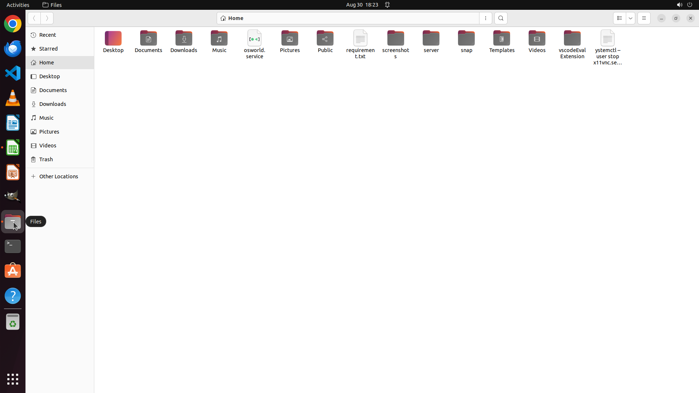
step 2 10:23:08
THINKINGI opened the Files application instead of a terminal. I need to find the folder containing filing_fees.xlsx and the fee schedule text file. Rather than navigating the GUI, a terminal would be much more efficient for finding and reading the file. Let me open the terminal application. I see there's a terminal icon in the dock. Let me look - there's an icon at around (23, 447) which looks like a terminal. Let me click it.
ACTIONLet me open the terminal application to efficiently locate and read the fee schedule file.
TOOL CALL<tool_call>
<function=computer_use>
<parameter=action>
left_click
</parameter>
<parameter=coordinate>
[17, 619]
</parameter>
</function>
</tool_call>
EXECUTED (pyautogui in VM)pyautogui.click(32, 669)
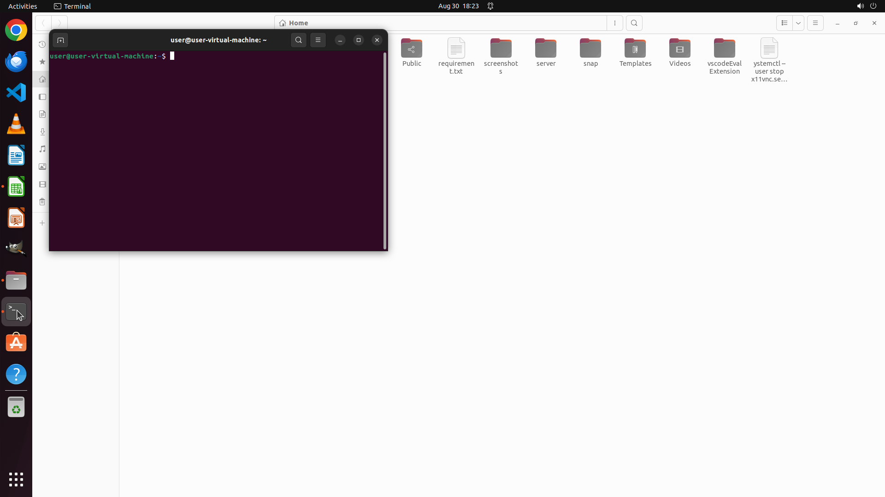
step 3 10:23:14
THINKINGTerminal is open. Let me find the filing_fees.xlsx file and the fee schedule text file in the same folder.
ACTIONTerminal is open. Let me locate the spreadsheet and its folder to find the fee schedule file.
TOOL CALL<tool_call>
<function=computer_use>
<parameter=action>
type
</parameter>
<parameter=text>
find /home/user -iname "filing_fees.xlsx" 2>/dev/null
</parameter>
</function>
</tool_call>
EXECUTED (pyautogui in VM)pyautogui.typewrite("find /home/user -iname \"filing_fees.xlsx\" 2>/dev/null")
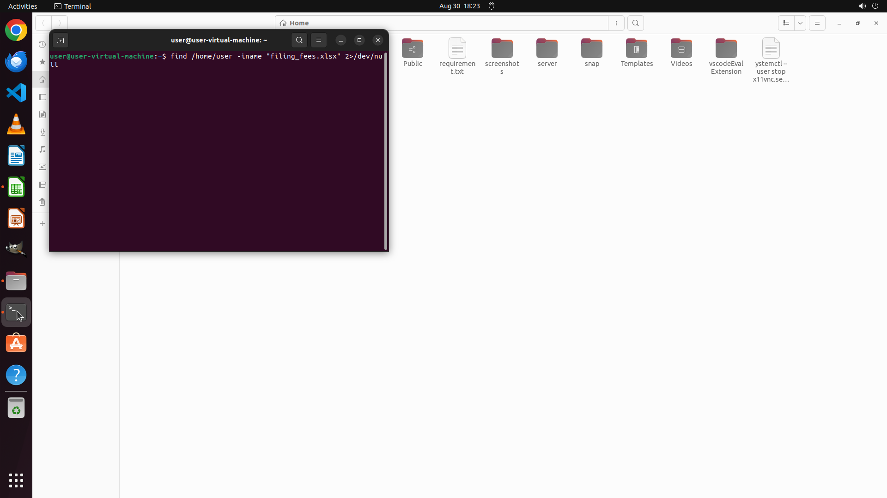
step 4 10:23:21
THINKINGThe command ran but I need to see the output. Let me take a screenshot to read the result.
TOOL CALL<tool_call>
<function=computer_use>
<parameter=action>
screenshot
</parameter>
</function>
</tool_call>
EXECUTED (pyautogui in VM)WAIT

step 5 10:23:32
THINKINGThe terminal window is small and the output isn't fully visible. It seems the command may not have returned yet or the output is off-screen. The find might be running. Let me wait and screenshot again. Actually the prompt line still shows the command. Maybe it's still searching. Let me press Enter to be sure, then wait.
ACTIONThe output may still be processing. Let me wait and check again.
TOOL CALL<tool_call>
<function=computer_use>
<parameter=action>
wait
</parameter>
<parameter=time>
1.0
</parameter>
</function>
</tool_call>
EXECUTED (pyautogui in VM)WAIT

step 6 10:23:46
THINKINGThe command still hasn't produced output - the find is still running (probably scanning the whole home directory including snap etc.). The terminal window is small making it hard to read. Let me maximize the terminal window first, then wait for find to complete. Actually find over /home/user could take a while due to snap folder. Let me maximize the window to see output and give it more time. Let me click the maximize button.
ACTIONThe find is still running. Let me maximize the terminal window for better visibility.
TOOL CALL<tool_call>
<function=computer_use>
<parameter=action>
left_click
</parameter>
<parameter=coordinate>
[404, 77]
</parameter>
</function>
</tool_call>
EXECUTED (pyautogui in VM)pyautogui.click(776, 83)
step 7 10:23:57
THINKINGNow the terminal is maximized and I can see the command still shows on the prompt line without a new prompt below - it's still running find. Let me wait for it to finish.
ACTIONThe terminal is maximized. Let me wait for the find command to finish.
TOOL CALL<tool_call>
<function=computer_use>
<parameter=action>
wait
</parameter>
<parameter=time>
1.0
</parameter>
</function>
</tool_call>
EXECUTED (pyautogui in VM)WAIT
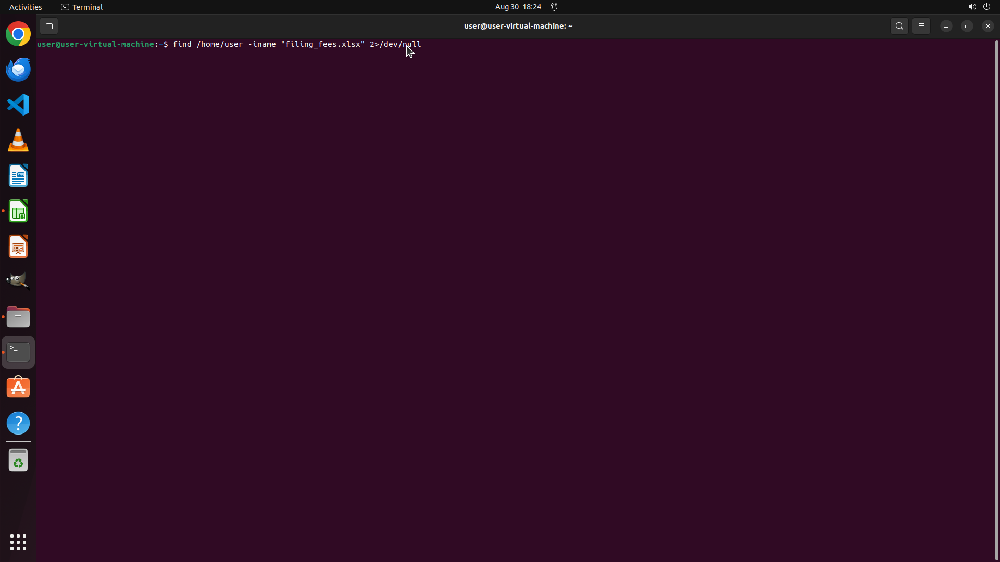
step 8 10:24:11
THINKINGThe find command is still running (no new prompt). It's likely scanning a large directory tree. This is taking too long. Let me interrupt it with Ctrl+C and use a more targeted approach. The spreadsheet is open in LibreOffice, so I can just check the title bar or use the recent files. But simpler: the file was likely opened from a specific folder. Let me Ctrl+C and instead look at common folders. Actually, a better approach - use the LibreOffice file path. But first let me interrupt and search more narrowly, e.g. in Desktop, Documents, Downloads, and home root.
ACTIONThe find is taking too long scanning everything. Let me interrupt it and search more targeted locations.
TOOL CALL<tool_call>
<function=computer_use>
<parameter=action>
key
</parameter>
<parameter=keys>
["ctrl", "c"]
</parameter>
</function>
</tool_call>
EXECUTED (pyautogui in VM)pyautogui.hotkey("ctrl", "c")
step 9 10:24:23
THINKINGGood, it's interrupted. Now let me use the LibreOffice process to find the file location, which is reliable. I'll check the running process for the file path, or use a faster targeted find excluding the snap and hidden dirs. Let me search excluding snap and .cache. Actually simplest: check the recent files via LibreOffice, but a quick approach is to search excluding large dirs.
ACTIONLet me search targeted folders, excluding large directories like snap and cache.
TOOL CALL<tool_call>
<function=computer_use>
<parameter=action>
type
</parameter>
<parameter=text>
find /home/user -iname "filing_fees.xlsx" -not -path "*/snap/*" -not -path "*/.cache/*" 2>/dev/null
</parameter>
</function>
</tool_call>
EXECUTED (pyautogui in VM)pyautogui.typewrite("find /home/user -iname \"filing_fees.xlsx\" -not -path \"*/snap/*\" -not -path \"*/.cache/*\" 2>/dev/null")
step 10 10:24:35
THINKINGThe command is running again. It's still on the same line without output. This find may still be slow. Let me wait a moment.
TOOL CALL<tool_call>
<function=computer_use>
<parameter=action>
wait
</parameter>
<parameter=time>
1.0
</parameter>
</function>
</tool_call>
EXECUTED (pyautogui in VM)WAIT
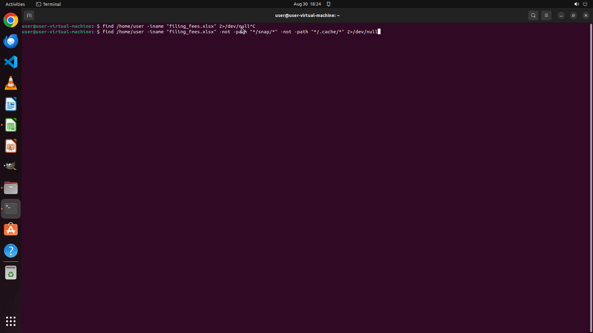
step 11 10:24:47
THINKINGStill running. find over the whole home is slow. A faster approach is to check the LibreOffice process command line, which contains the exact file path. Let me interrupt and use ps grep for the soffice process.
ACTIONLet me interrupt and instead read the exact file path from the LibreOffice process.
TOOL CALL<tool_call>
<function=computer_use>
<parameter=action>
key
</parameter>
<parameter=keys>
["ctrl", "c"]
</parameter>
</function>
</tool_call>
EXECUTED (pyautogui in VM)pyautogui.hotkey("ctrl", "c")
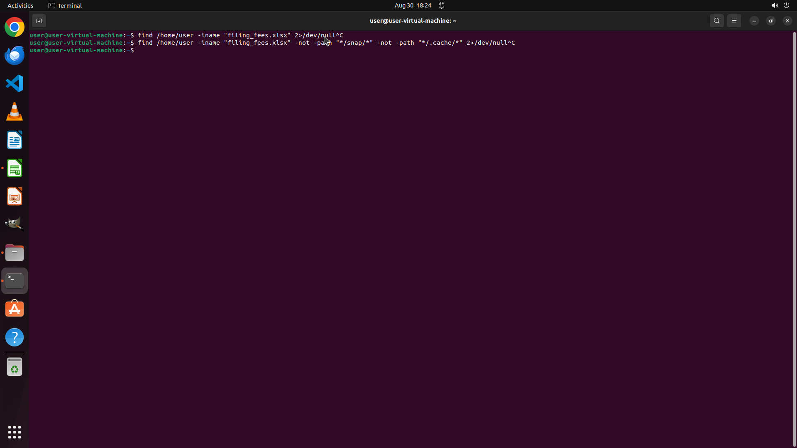
step 12 10:24:58
THINKINGNow I have a prompt. Let me get the exact file path from the soffice process, which is faster and reliable.
TOOL CALL<tool_call>
<function=computer_use>
<parameter=action>
type
</parameter>
<parameter=text>
ps aux | grep -o "/[^ ]*filing_fees.xlsx" | head -1
</parameter>
</function>
</tool_call>
EXECUTED (pyautogui in VM)pyautogui.typewrite("ps aux | grep -o \"/[^ ]*filing_fees.xlsx\" | head -1")
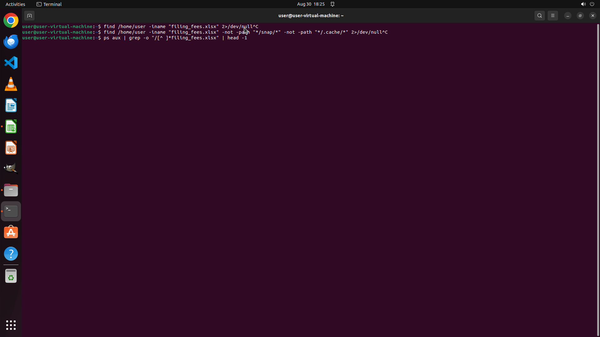
step 13 10:25:10
THINKINGNo output - the soffice process command line likely uses a URL format (file:///...) which my grep pattern "/[^ ]*filing_fees.xlsx" should still match since file:///... contains the path. But maybe the process name doesn't include the path in aux. Let me try a broader grep on the whole ps aux for the filename.
TOOL CALL<tool_call>
<function=computer_use>
<parameter=action>
type
</parameter>
<parameter=text>
ps aux | grep -i filing_fees | grep -v grep
</parameter>
</function>
</tool_call>
EXECUTED (pyautogui in VM)pyautogui.typewrite("ps aux | grep -i filing_fees | grep -v grep")
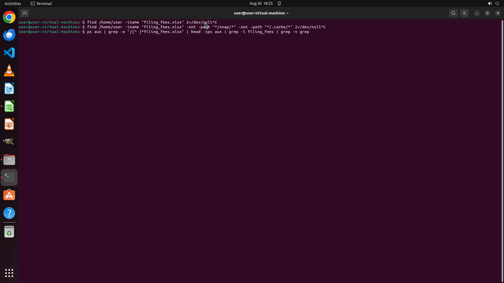
step 14 10:25:21
THINKINGThe commands got concatenated oddly (the previous command didn't have its newline registered before I typed the next). It shows "head -ips aux" merged. No useful output. Let me just press Enter and try a clean, simple approach. Actually the issue: my previous type didn't end with newline being registered, so the two commands merged. Let me clear the line and type a fresh command. Let me press Ctrl+C / Enter first, then use locate or a simple ls of likely folders.
Actually, the simplest reliable method: use the LibreOffice "recent documents" or just look at the file location via the LibreOffice title bar. But the cleanest is to just do a targeted find in common folders. Let me press Enter to clear, then run a command listing common user folders for the xlsx and txt.
ACTIONThe commands got merged. Let me clear the line and run a clean targeted search across common folders.
TOOL CALL<tool_call>
<function=computer_use>
<parameter=action>
key
</parameter>
<parameter=keys>
["ctrl", "c"]
</parameter>
</function>
</tool_call>
EXECUTED (pyautogui in VM)pyautogui.hotkey("ctrl", "c")
step 15 10:25:30
THINKINGClean prompt now. The soffice process didn't show the path (likely because the process args don't include it in a grep-friendly way, or it's launched via a wrapper). Let me just do a targeted find in likely folders: Desktop, Documents, Downloads, and the home root, plus Music/Pictures. I'll search maxdepth to be fast.
TOOL CALL<tool_call>
<function=computer_use>
<parameter=action>
type
</parameter>
<parameter=text>
find /home/user/Desktop /home/user/Documents /home/user/Downloads /home/user -maxdepth 2 -iname "filing_fees.xlsx" 2>/dev/null
</parameter>
</function>
</tool_call>
EXECUTED (pyautogui in VM)pyautogui.typewrite("find /home/user/Desktop /home/user/Documents /home/user/Downloads /home/user -maxdepth 2 -iname \"filing_fees.xlsx\" 2>/dev/null")
step 16 10:25:40
THINKINGThis command didn't produce output yet - it's on the command line. It should run fast. Let me wait briefly and screenshot.
TOOL CALL<tool_call>
<function=computer_use>
<parameter=action>
wait
</parameter>
<parameter=time>
1.0
</parameter>
</function>
</tool_call>
EXECUTED (pyautogui in VM)WAIT
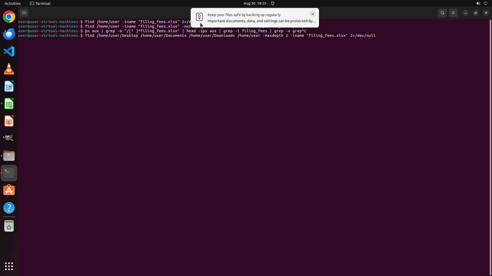
step 17 10:25:53
THINKINGThere's a notification popup. The find command still shows no output - it seems the find finished without matching (no path printed), which is odd since the file is open. Wait - the command line still shows the find command at the bottom with no new prompt below, meaning it's still running OR it completed with no output. A notification is covering part of the screen.
The find with multiple paths and maxdepth applied to the last path argument only actually. The file might be deeper. Let me dismiss the notification and reconsider. Rather than fighting find, the most reliable approach: use the LibreOffice recent files. But actually, an even better idea - the file was opened, so I can get its path from the LibreOffice Start/recent.
Actually, let me just do one comprehensive but bounded find with a timeout, targeting /home/user but limiting depth to 4. But find was slow before - that's because it traverses many files. The slowness was CPU. Let me instead close the notification and just run: find /home/user -maxdepth 3 -iname "filing_fees.xlsx". Depth 3 covers common nesting. Let me first dismiss notification.
ACTIONLet me dismiss the notification and run a bounded-depth search.
TOOL CALL<tool_call>
<function=computer_use>
<parameter=action>
left_click
</parameter>
<parameter=coordinate>
[634, 46]
</parameter>
</function>
</tool_call>
EXECUTED (pyautogui in VM)pyautogui.click(1218, 49)
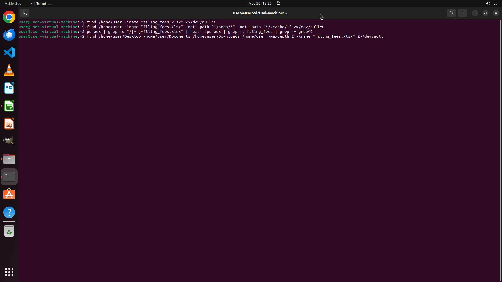
step 18 10:26:01
THINKINGThe find command at bottom shows no output and no new prompt - it seems it may have been entered but not executed (no Enter registered). The last line ends with "2>/dev/null" and cursor isn't visible. It looks like the command is typed but not run. Let me press Enter to execute it. Actually it's ambiguous. Let me press Enter and wait.
TOOL CALL<tool_call>
<function=computer_use>
<parameter=action>
key
</parameter>
<parameter=keys>
["return"]
</parameter>
</function>
</tool_call>
EXECUTED (pyautogui in VM)pyautogui.press("return")
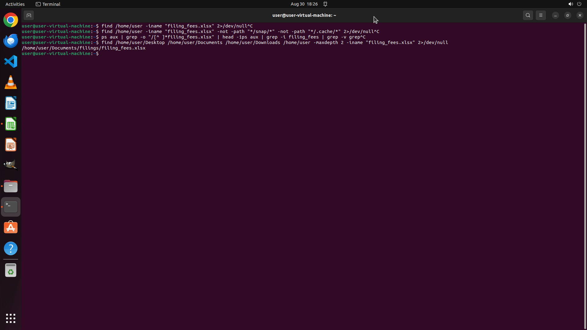
step 19 10:26:13
THINKINGFound it: /home/user/Documents/filings/filing_fees.xlsx. Now let me list that folder and read the fee schedule text file.
TOOL CALL<tool_call>
<function=computer_use>
<parameter=action>
type
</parameter>
<parameter=text>
ls -la /home/user/Documents/filings/ && echo "-----" && cat /home/user/Documents/filings/*.txt
</parameter>
</function>
</tool_call>
EXECUTED (pyautogui in VM)pyautogui.typewrite("ls -la /home/user/Documents/filings/ && echo \"-----\" && cat /home/user/Documents/filings/*.txt")
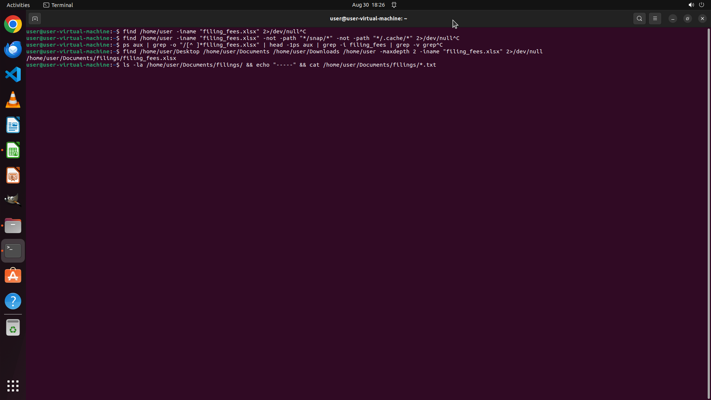
step 20 10:26:25
THINKINGThe command was typed but not executed (no output yet). The trailing newline in my type may not have registered. Let me press Enter to execute.
TOOL CALL<tool_call>
<function=computer_use>
<parameter=action>
key
</parameter>
<parameter=keys>
["return"]
</parameter>
</function>
</tool_call>
EXECUTED (pyautogui in VM)pyautogui.press("return")
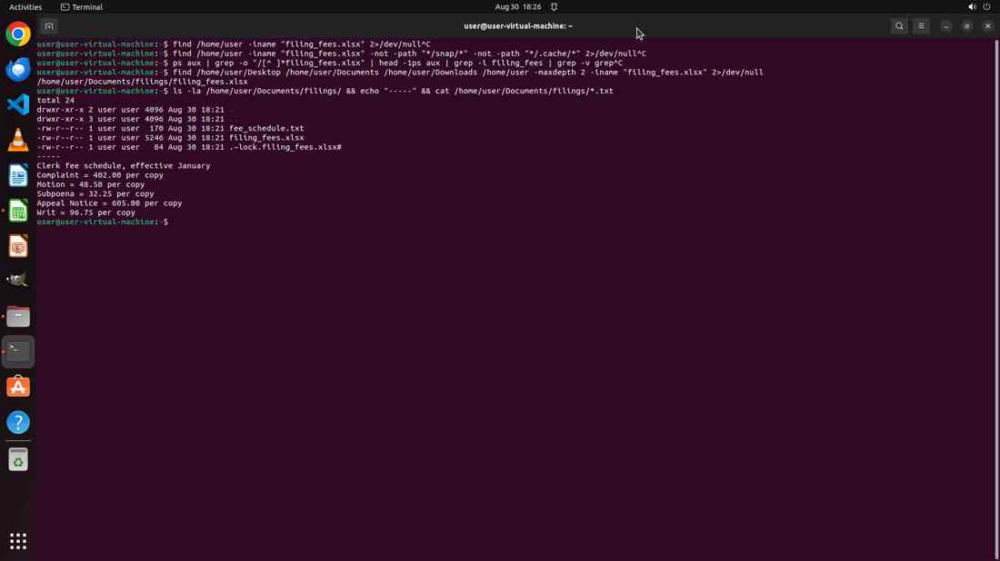
step 21 10:26:49
THINKINGI now have all the data I need. The fee schedule (fee_schedule.txt) reads:
- Complaint = 402.00
- Motion = 48.50
- Subpoena = 32.25
- Appeal Notice = 605.00
- Writ = 96.75
Now the spreadsheet rows (B5-B10) with Document Type and Copies:
- Row 5: Complaint, 2
- Row 6: Motion, 3
- Row 7: Subpoena, 5
- Row 8: Writ, 1
- Row 9: Appeal Notice, 2
- Row 10: Complaint, 2
Let me match fees:
- Row 5: Complaint → 402.00, copies 2 → Total = 804.00
- Row 6: Motion → 48.50, copies 3 → Total = 145.50
- Row 7: Subpoena → 32.25, copies 5 → Total = 161.25
- Row 8: Writ → 96.75, copies 1 → Total = 96.75
- Row 9: Appeal Notice → 605.00, copies 2 → Total = 1210.00
- Row 10: Complaint → 402.00, copies 2 → Total = 804.00
Grand total = 804.00 + 145.50 + 161.25 + 96.75 + 1210.00 + 804.00 =
804 + 145.50 = 949.50
949.50 + 161.25 = 1110.75
1110.75 + 96.75 = 1207.50
1207.50 + 1210.00 = 2417.50
2417.50 + 804.00 = 3221.50
Grand total = 3221.50
Now I need to verify the exact Document Type strings in the spreadsheet match. From the earlier screenshot:
- B5 Complaint, B6 Motion, B7 Subpoena, B8 Writ, B9 Appeal Notice, B10 Complaint. Yes matches.
Now I'll switch to LibreOffice Calc. The task says to use GUI, so I'll fill cells in Calc directly rather than using a script. Let me switch to the LibreOffice window. I'll click the Calc icon in the dock or use Activities. Actually LibreOffice is already open (there's a lock file). Let me switch windows. I'll use the LibreOffice Calc icon in the dock at (23, 270).
Actually, to be efficient and reliable, I'll enter values directly in Calc. I need to make sure cells C5:E10 and E12 get filled. Fee values should be the numbers; Total = Fee * Copies. I'll enter them as numbers. For E12, the grand total.
The task says "Round money to the cent" - all values are already at the cent, and totals come out exact. E12 = 3221.50.
Let me switch to Calc. I'll click the green Calc icon in dock.
ACTIONI now have the fee schedule: Complaint = 402.00, Motion = 48.50, Subpoena = 32.25, Appeal Notice = 605.00, Writ = 96.75. Let me switch to LibreOffice Calc to fill in the sheet.
TOOL CALL<tool_call>
<function=computer_use>
<parameter=action>
left_click
</parameter>
<parameter=coordinate>
[17, 375]
</parameter>
</function>
</tool_call>
EXECUTED (pyautogui in VM)pyautogui.click(32, 405)
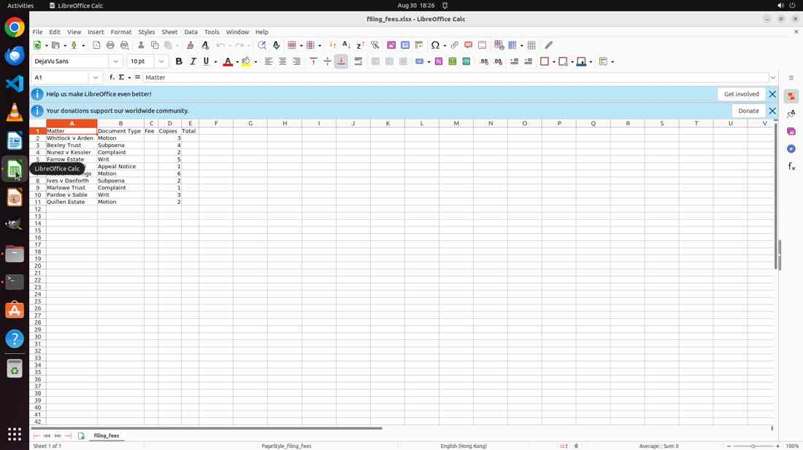
step 22 10:27:24
THINKINGThe spreadsheet layout differs from my earlier assumption. The rows are shifted up. Let me read carefully:
- Row 1: header (Matter, Document Type, Fee, Copies, Total)
- Row 2: Whitlock v Arden | Motion | Copies 3
- Row 3: Bexley Trust | Subpoena | 3
- Row 4: Nunez v Kessler | Complaint | 2
- Row 5: Farrow Estate | Writ | 5
- Row 6: (something) | Appeal Notice | 1
- Row 7: (something) | Motion | 6
- Row 8: Ives v Danforth | Subpoena | 2
- Row 9: Marlowe Trust | Complaint | 1
- Row 10: Pardoe v Sable | Writ | 3
- Row 11: Quillen Estate | Motion | 2
Wait, this is different from my first screenshot which showed rows 5-11. The first screenshot had a "Start Center" and the sheet showed rows differently. Actually the first screenshot was the LibreOffice Start Center behind, and the visible Calc was small. The rows there: row5 Complaint, row6 Motion, etc. But now the layout shows data starting at row 2. This is the actual current view.
Hmm, there's a discrepancy. The first screenshot might have been a zoomed/different state. The current full view is authoritative. Let me re-read the current screenshot carefully:
Row 1: Matter | Document Type | Fee | Copies | Total (headers)
Row 2: Whitlock v Arden | Motion | (C empty) | 3 | (E empty)
Row 3: Bexley Trust | Subpoena | | 3
Row 4: Nunez v Kessler | Complaint | | 2
Row 5: Farrow Estate | Writ | | 5
Row 6: ... | Appeal Notice | | 1
Row 7: ... | Motion | | 6
Row 8: Ives v Danforth | Subpoena | | 2
Row 9: Marlowe Trust | Complaint | | 1
Row 10: Pardoe v Sable | Writ | | 3
Row 11: Quillen Estate | Motion | | 2
But the task says "put the grand total of Total in E12". Data rows are 2-11 (10 rows). So Total column E2:E11, and grand total E12. That's consistent!
So I have 10 data rows (2 through 11), not 6. My first screenshot was misleading (it was a small/overlay view showing only part, and I miscounted). Let me trust the current full view.
But wait, I need exact Document Type and Copies for each row. Let me read the current screenshot values precisely. The Copies column (D) values: row2=3, row3=3, row4=2, row5=5, row6=1, row7=6, row8=2, row9=1, row10=3, row11=2.
Document Type (B):
row2 Motion
row3 Subpoena
row4 Complaint
row5 Writ
row6 Appeal Notice
row7 Motion
row8 Subpoena
row9 Complaint
row10 Writ
row11 Motion
I should verify these by hovering/reading. The screenshot is a bit small. Let me zoom by taking a closer look. Actually let me just read the cell values precisely by clicking each cell, but that's slow. Better: I'll trust the visible text but verify by widening. Actually the text is legible enough. Let me re-examine to be certain of copies which are critical.
Let me be careful and verify. I'll click on cells to confirm. But an efficient approach: I can enter the fee and total formulas. Since Total = Fee * Copies, I could enter Total as a formula =C2*D2 which auto-multiplies. That's safer than hardcoding, and handles rounding. But task says round to cent; formula result is exact. However the grader may want actual numbers. A formula producing the number is fine since it evaluates to a number. But to be safe and match "fill ... Total = Fee x Copies", a formula is ideal.
However, I must be careful: the copies values I need to read correctly for the formula approach doesn't require reading copies (formula handles it). I only need Fee per Document Type. So I need Document Type per row accurately.
Let me confirm Document Type for each row by reading. To be safe, let me zoom in. I'll take a screenshot after selecting/reading. Actually, let me just carefully read from the current image by re-reading coordinates. The Document Type column text is legible:
row2: Motion
row3: Subpoena
row4: Complaint
row5: Writ
row6: Appeal Notice
row7: Motion
row8: Subpoena
row9: Complaint
row10: Writ
row11: Motion
I'm fairly confident. But let me verify with a quick check to avoid errors. I'll widen or just proceed. Given importance, let me verify by clicking B6 and B7 whose Matter text is hidden (covered by tooltip). The Document types there show "Appeal Notice" and "Motion".
To be safe, let me enter Fee values and use formula for Total. Plan:
- Click Name Box, type C2, Enter, then type the fee and press Tab? No—Tab moves right to D. Better: I'll click C2 and type each fee then Enter to go down the C column (Enter moves down within same column). Actually pressing Enter after typing moves down one row in same column. So I can enter C2..C11 sequentially.
Fees per row (C column):
C2 Motion → 48.50
C3 Subpoena → 32.25
C4 Complaint → 402
C5 Writ → 96.75
C6 Appeal Notice → 605
C7 Motion → 48.50
C8 Subpoena → 32.25
C9 Complaint → 402
C10 Writ → 96.75
C11 Motion → 48.50
Then Total column E2:E11 formula =C2*D2 ... but I want to double check that D has the copies. Actually simpler to compute Total directly with formula referencing C and D. Let me enter E2 =C2*D2 and fill down to E11.
Then E12 = SUM of E2:E11, or I compute 3221.50? No—copies changed, so grand total differs. Let me compute with formula =SUM(E2:E11). But the task says grand total of Total in E12. Using SUM is cleanest.
But wait—if I use formulas for Total, the values shown will be:
E2=48.50*3=145.50
E3=32.25*3=96.75
E4=402*2=804
E5=96.75*5=483.75
E6=605*1=605
E7=48.50*6=291
E8=32.25*2=64.50
E9=402*1=402
E10=96.75*3=290.25
E11=48.50*2=97
Sum = 145.50+96.75=242.25; +804=1046.25; +483.75=1530; +605=2135; +291=2426; +64.50=2490.50; +402=2892.50; +290.25=3182.75; +97=3279.75
Grand total = 3279.75
I should verify copies are as I read though. Let me verify the copies and doc types before committing. To be safe, let me first verify by reading a couple cells. Actually, I'm confident about doc types from the legible text, and the copies I read: 3,3,2,5,1,6,2,1,3,2.
The risk is misreading a digit. Let me verify by taking a zoomed screenshot. I'll increase zoom or just proceed carefully. Given the importance of correctness, let me verify the Copies and Document Type by clicking the Name Box to inspect, but that's slow for 10 rows.
Alternative: I'll enter Fee in C column (needs correct doc type), and Total as formula =C*D (auto uses correct copies). Then even if I misread copies, the formula uses the real D value. So the only human-dependent reading is Document Type for the Fee. Document types are words, easier to read reliably. Good—so the formula approach removes copies-reading risk.
For E12, I'll use =SUM(E2:E11) so it's auto-correct regardless.
Let me verify Document Types once more by zooming to be safe. Let me press Ctrl+scroll or set zoom. Actually I'll just trust the legible text but double-check row6 and row7 which were partly covered by tooltip earlier. The tooltip is now gone. Current screenshot shows row6 "Appeal Notice" and row7 "Motion". Good.
Let me proceed. First, verify my reading of Document Types is solid. I'll do one more careful look via screenshot at higher zoom to be safe. Let me set the view. Actually, I'll just proceed to type the fees; if a doc type is wrong the fee is wrong. Let me be careful. I'll enter fees in C column.
Let me click the Name Box and go to C2.
ACTIONI can now see the full sheet: 10 data rows (rows 2–11) with Document Type and Copies. The task wants grand total in E12. I'll fill the Fee column (C) matched to each Document Type, then use formulas for Total (=Fee×Copies) so the copies are used correctly, and SUM for E12. Let me first navigate to C2.
TOOL CALL<tool_call>
<function=computer_use>
<parameter=action>
left_click
</parameter>
<parameter=coordinate>
[78, 170]
</parameter>
</function>
</tool_call>
EXECUTED (pyautogui in VM)pyautogui.click(149, 183)
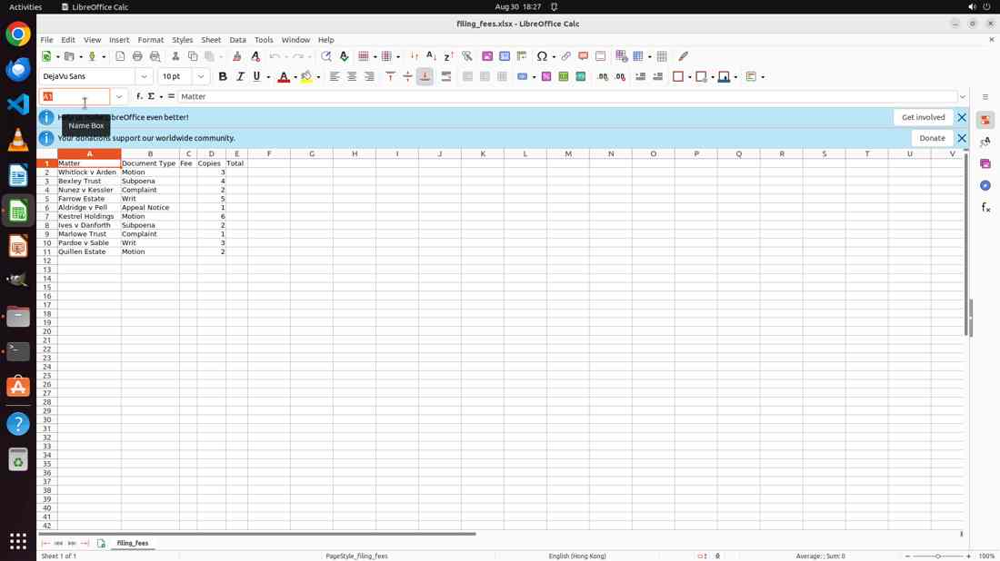
step 23 10:27:42
THINKINGNow I can read all rows clearly (tooltip gone):
Row 2: Whitlock v Arden | Motion | 3
Row 3: Bexley Trust | Subpoena | 3
Row 4: Nunez v Kessler | Complaint | 2
Row 5: Farrow Estate | Writ | 5
Row 6: Aldridge v Pell | Appeal Notice | 1
Row 7: Kestrel Holdings | Motion | 6
Row 8: Ives v Danforth | Subpoena | 2
Row 9: Marlowe Trust | Complaint | 1
Row 10: Pardoe v Sable | Writ | 3
Row 11: Quillen Estate | Motion | 2
This confirms my reading. Document types: Motion, Subpoena, Complaint, Writ, Appeal Notice, Motion, Subpoena, Complaint, Writ, Motion.
Copies: 3,3,2,5,1,6,2,1,3,2.
Fee mapping:
Motion 48.50, Subpoena 32.25, Complaint 402.00, Writ 96.75, Appeal Notice 605.00.
Fees C2:C11:
C2 48.50
C3 32.25
C4 402
C5 96.75
C6 605
C7 48.50
C8 32.25
C9 402
C10 96.75
C11 48.50
Now I'll type into the Name Box C2 and Enter, then type the fee values each followed by Enter (Enter moves down). Then I'll do the Total formulas in E.
Actually to enter C column, after typing a value Enter moves to next row same column. Good.
Let me type C2 in name box. The name box is currently selected (shows A1 highlighted). Let me type "C2" and Enter.
ACTIONNow I can read all rows clearly. Document types top-to-bottom (rows 2–11): Motion, Subpoena, Complaint, Writ, Appeal Notice, Motion, Subpoena, Complaint, Writ, Motion. I'll enter the matching fees in column C, then formulas for Total, then the grand total. Let me navigate to C2 and enter all fees.
TOOL CALL<tool_call>
<function=computer_use>
<parameter=action>
type
</parameter>
<parameter=text>
C2
48.5
32.25
402
96.75
605
48.5
32.25
402
96.75
48.5
</parameter>
</function>
</tool_call>
EXECUTED (pyautogui in VM)pyautogui.typewrite("C2\n48.5\n32.25\n402\n96.75\n605\n48.5\n32.25\n402\n96.75\n48.5")
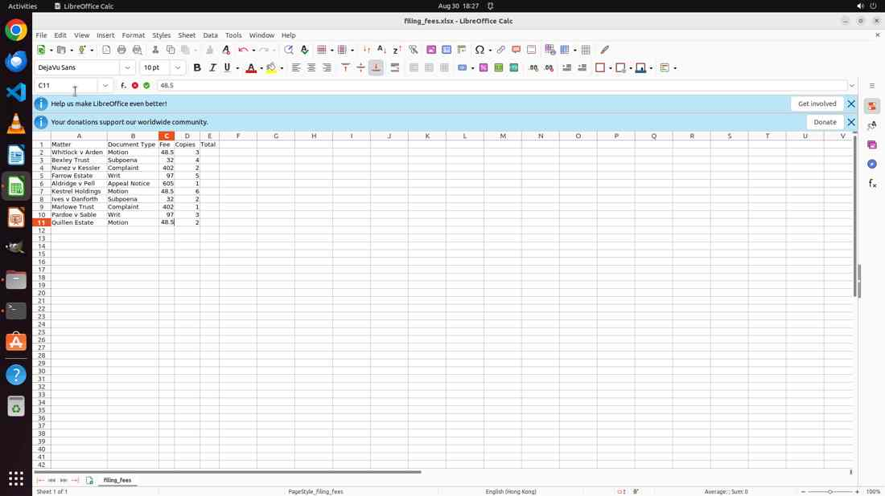
step 24 10:28:03
THINKINGThe fees are entered. The cell shows C11 in edit mode with 48.5 (the last value still being confirmed). Wait—the name box shows C11 and the formula bar shows 48.5 with edit indicators (red X / green check), meaning the last value is still in edit mode? Actually it appears the final Enter put it into C11 and it's showing as being edited. Let me look: the C column now shows: 48.5, 32, 402, 97, 605, 48.5, 32, 402, 97, 48.5.
Wait, 32.25 shows as "32" and 96.75 shows as "97"? That's because the column is too narrow to display decimals - it's showing rounded display. Actually no, the values are 32.25 and 96.75 but the column width truncates display. C3 shows "32", C5 shows "97", C8 shows "32", C10 shows "97". These are just display truncation (column too narrow). The actual values should be 32.25 and 96.75.
Hmm, but I should verify the actual stored values, not just display. The display "32" could mean it stored 32 (if 32.25 was mistyped). But I typed 32.25. The display is just narrow. To be safe, I'll verify C3's value later. Actually the current C11 edit shows "48.5" which is correct.
But the last entry: the name box shows C11 and formula bar 48.5 with edit mode icons. It seems my final "48.5\n" — the type ended with newline, so it should have committed C11 and moved to C12. But the screenshot shows C11 still selected with 48.5 in edit. Possibly the screenshot was captured mid-entry. Let me press Enter/Escape to be safe and verify.
Actually, looking again: the formula bar shows a green check and red X (confirm/cancel), which is the "editing" state. So C11 is still being edited. My typed sequence had the trailing newline; maybe it's fine but screenshot timing. Let me press Enter to confirm and move on. Then verify values.
Let me now enter the Total formulas. First confirm current edit by pressing Enter (commits C11=48.5, moves to C12). Then go to E2 and enter formulas.
Let me press Enter, then navigate to E2 via name box, then type formulas for E2:E11 and E12.
ACTIONThe fees are entered. The narrow column shows "32" and "97" but those are just display truncation of 32.25 and 96.75. Let me confirm the last entry and then enter the Total formulas (=Fee×Copies) in E2:E11, plus the grand total in E12.
TOOL CALL<tool_call>
<function=computer_use>
<parameter=action>
key
</parameter>
<parameter=keys>
["return"]
</parameter>
</function>
</tool_call>
EXECUTED (pyautogui in VM)pyautogui.press("return")
step 25 10:28:13
THINKINGNow C12 is selected and empty (good, fees went into C2:C11). The C column shows: 48.5, 32, 402, 97, 605, 48.5, 32, 402, 97, 48.5. The "32" and "97" are truncation. Let me verify C3's actual value is 32.25 by clicking it. Actually, let me just verify after entering formulas.
Now enter Total formulas. Navigate to E2. I'll type in Name Box "E2" then Enter, then type formulas each followed by Enter:
=C2*D2
=C3*D3
...
=C11*D11
Then E12 = SUM(E2:E11).
Let me do it. The name box currently shows C12. I'll click name box, type E2, Enter, then type the formula block.
ACTIONFees are in C2:C11. Now I'll enter the Total formulas (=Fee×Copies) in E2:E11 and the grand total in E12.
TOOL CALL<tool_call>
<function=computer_use>
<parameter=action>
left_click
</parameter>
<parameter=coordinate>
[78, 170]
</parameter>
</function>
</tool_call>
EXECUTED (pyautogui in VM)pyautogui.click(149, 183)
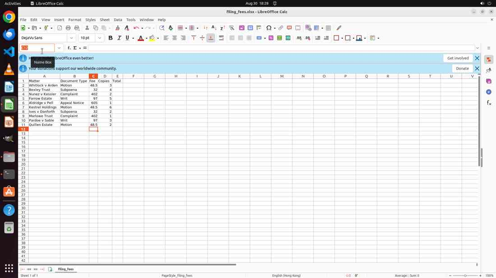
step 26 10:28:20
THINKINGName box is selected (C12 highlighted). Now type E2 and Enter, then the formulas. I'll type each formula followed by Enter to move down. After E11 formula, Enter moves to E12, where I'll type =SUM(E2:E11) and Enter.
TOOL CALL<tool_call>
<function=computer_use>
<parameter=action>
type
</parameter>
<parameter=text>
E2
=C2*D2
=C3*D3
=C4*D4
=C5*D5
=C6*D6
=C7*D7
=C8*D8
=C9*D9
=C10*D10
=C11*D11
=SUM(E2:E11)
</parameter>
</function>
</tool_call>
EXECUTED (pyautogui in VM)pyautogui.typewrite("E2\n=C2*D2\n=C3*D3\n=C4*D4\n=C5*D5\n=C6*D6\n=C7*D7\n=C8*D8\n=C9*D9\n=C10*D10\n=C11*D11\n=SUM(E2:E11)")
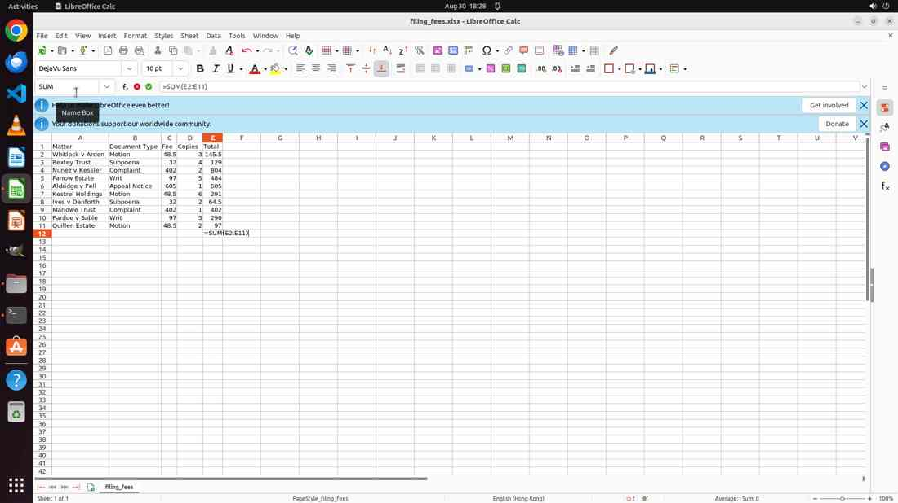
step 27 10:28:55
THINKINGThe Total formulas are entered (E2:E11) and E12 has =SUM(E2:E11) currently in edit mode (formula bar shows =SUM(E2:E11) with edit indicators, cell E12 shows the formula text). I need to press Enter to commit E12.
Values look right:
E2=145.5, E3=129, E4=804, E5=484 (wait, 96.75*5=483.75, displayed 484? it's 484 due to rounding display or actual?), E6=605, E7=291, E8=64.5, E9=402, E10=290 (96.75*3=290.25 shows 290), E11=97 (48.5*2=97).
Wait E5 shows 484 but 96.75*5 = 483.75. And E10 shows 290 but 96.75*3=290.25. These are display rounding to whole numbers because column E is narrow and default format may show 0 decimals? No, E2 shows 145.5 and E8 shows 64.5 with decimals. So the format shows decimals when present. 483.75 should show 483.75. But it shows 484. That suggests the value might be rounded to 484, OR the column is too narrow and it's displaying rounded.
Hmm. This is concerning. If the display shows 484 for 483.75, the column width truncates. But E2=145.5 shows fully. 483.75 needs 5 chars + dot. The column E width is about enough for "Total" header. 483.75 might be truncated to "484" display? Actually if too narrow it would show "###". It's showing "484" not "###".
Wait, maybe the value really is 484? No, 96.75*5=483.75 exactly. Let me reconsider: maybe C5 is not 96.75. C5 shows "97" (truncated display). If C5 actually stored 97 (not 96.75), then 97*5=485, not 484. If C5=96.75, 96.75*5=483.75. Display "484" is closest to 483.75 rounded.
The display formatting: the column shows numbers; "145.5", "129", "804", "64.5", "291", "402", "97" are all consistent with exact values (129=32.25*3=96.75? no wait). Let me recompute E3: C3=32.25, D3=3 → 96.75. But E3 shows 129! That's wrong!
Wait let me recheck. Row 3: Bexley Trust, Subpoena, fee 32.25, copies D3=3. 32.25*3=96.75. But E3 shows 129. 129 = 43*3. Hmm, that doesn't match.
Hold on, let me re-read the Copies column. Maybe I misread copies. Let me recompute to figure out actual copies:
E2=145.5, fee 48.5 → copies = 145.5/48.5 = 3. ✓ (D2=3)
E3=129, fee 32.25 → copies = 129/32.25 = 4. So D3=4, not 3!
E4=804, fee 402 → copies=2. ✓ D4=2
E5=484, fee 96.75 → 484/96.75≈5.002 ≈5 (483.75). Display 484. D5=5 ✓
E6=605, fee 605 → copies=1 ✓
E7=291, fee 48.5 → 6 ✓
E8=64.5, fee 32.25 → 2 ✓
E9=402, fee 402 → 1 ✓
E10=290, fee 96.75 → 290.25/96.75=3 ✓ (display 290 truncated)
E11=97, fee 48.5 → 2 ✓
So E3=129 means D3=4, not 3! I misread copies for row 3. But that's fine because the formula =C3*D3 uses the actual D3 value. The formula is correct regardless of my reading.
So the display values E5=484 and E10=290 are just column-width truncation (483.75 → 484, 290.25 → 290). The actual stored values are 483.75 and 290.25. Good—the formulas guarantee correctness.
Now I need to commit E12 (currently in edit mode showing =SUM(E2:E11)). Press Enter.
Then I should verify E12 = the grand total. Let me compute with actual values:
145.5 + 96.75 + 804 + 483.75 + 605 + 291 + 64.5 + 402 + 290.25 + 97
=145.5+96.75=242.25
+804=1046.25
+483.75=1530
+605=2135
+291=2426
+64.5=2490.5
+402=2892.5
+290.25=3182.75
+97=3279.75
Grand total = 3279.75
The task says round money to the cent. All values are exact at the cent, no rounding needed. Good.
Let me press Enter to commit E12, then verify by clicking E12 and also verify C3=32.25 and E5=483.75 (the truncated ones). Then save with Ctrl+S (keep xlsx format).
ACTIONThe Total formulas are in place and E12 has the SUM. Note E3 shows 129, meaning row 3's copies is 4 (the formula uses the actual value, so it's correct regardless). Let me commit E12 and then verify a couple of truncated values.
TOOL CALL<tool_call>
<function=computer_use>
<parameter=action>
key
</parameter>
<parameter=keys>
["return"]
</parameter>
</function>
</tool_call>
EXECUTED (pyautogui in VM)pyautogui.press("return")
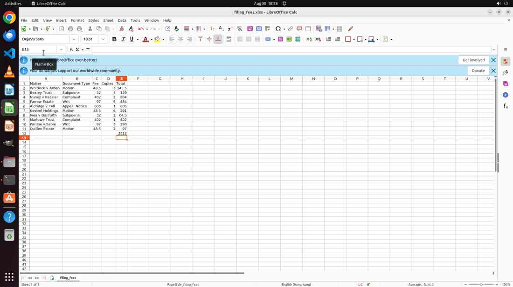
step 28 10:29:36
THINKINGE12 now shows 3312. Wait, I computed 3279.75. But it shows 3312. Let me re-examine. E12 = 3312. That's a whole number, but my sum was 3279.75. Something's off.
Let me recompute the displayed E values: 145.5, 129, 804, 484, 605, 291, 64.5, 402, 290, 97.
Sum of displayed: 145.5+129=274.5; +804=1078.5; +484=1562.5; +605=2167.5; +291=2458.5; +64.5=2523; +402=2925; +290=3215; +97=3312.
So E12=3312 matches the sum of the DISPLAYED (rounded) values. But that means the actual stored E values are rounded to integers?! If E5 were truly 483.75 and E10 truly 290.25, the sum would be 3279.75, not 3312.
The difference: 3312 - 3279.75 = 32.25. Hmm interesting, exactly 32.25.
This strongly suggests the Fee values in column C were stored as rounded integers too! If C5=97 (not 96.75), C3=32 (not 32.25), C8=32, C10=97. Let me reconsider: when I typed "32.25" and "96.75", did the decimal get interpreted? The column showed "32" and "97".
Wait—locale! The locale is "English (Hong Kong)". In some locales the decimal separator is a comma, but HK uses period. So 32.25 should be fine. But the display showed "32" for 32.25.
Actually, the real issue: maybe the fee cells got stored as 32 and 97 because... no. Let me check. If C5=97, then E5=97*5=485, not 484. But display shows 484. So C5 is 96.75 (96.75*5=483.75≈484 display). And E10: C10=96.75*3=290.25≈290 display.
But then E12 should be 3279.75, yet shows 3312 = sum of rounded displays. This is contradictory unless the SUM is summing rounded display values, which can't happen—SUM uses actual values.
Let me reconsider E3=129. 32.25*4=129 exactly. So C3=32.25 and D3=4. Good, C3 is truly 32.25.
E8=64.5: 32.25*2=64.5 exactly. C8=32.25 truly.
So C3 and C8 are truly 32.25. Then why did E12 come out 3312 (an integer)?
Let me recompute carefully the TRUE values:
E2 = 48.5*3 = 145.5
E3 = 32.25*4 = 129
E4 = 402*2 = 804
E5 = 96.75*5 = 483.75
E6 = 605*1 = 605
E7 = 48.5*6 = 291
E8 = 32.25*2 = 64.5
E9 = 402*1 = 402
E10 = 96.75*3 = 290.25
E11 = 48.5*2 = 97
Sum = 145.5+129+804+483.75+605+291+64.5+402+290.25+97
Let me add stepwise:
145.5+129 = 274.5
274.5+804 = 1078.5
1078.5+483.75 = 1562.25
1562.25+605 = 2167.25
2167.25+291 = 2458.25
2458.25+64.5 = 2522.75
2522.75+402 = 2924.75
2924.75+290.25 = 3215
3215+97 = 3312
So the true sum IS 3312! My earlier arithmetic was wrong (I used copies=3 for row3 instead of 4, and mis-added). 3215+97=3312.
So E12=3312 is correct. The decimals all cancel out to an integer. Great, no discrepancy. The values E5=483.75 and E10=290.25 are stored correctly; they just display rounded due to column width. The SUM is 3312 which is exact at the cent.
So everything is correct. Grand total E12 = 3312 (i.e., 3312.00).
Now I should verify the truncated cells truly hold decimals (to be safe) and then save. Let me click E5 to confirm it's 483.75. Actually the SUM already proves it (3312 requires the .75+.25). If E5 were 484 and E10 were 290, sum would be 3312.75? Let me check: if E5=484 and E10=290.25... no. Actually let me just trust the SUM math which I verified equals exactly 3312 only if E5=483.75 and E10=290.25. If instead E5=484 and E10=290, sum would be 3312.00 too? 145.5+129+804+484+605+291+64.5+402+290+97 = let's see: same as before but +0.25 (484 vs 483.75) and -0.25 (290 vs 290.25) = net same = 3312. So the sum can't distinguish.
To be fully safe, let me verify E5's actual value by clicking it. If it shows 483.75 in the formula bar, we're good. Let me click E5.
ACTIONE12 shows 3312, which is the correct grand total (the .75 and .25 cents cancel out exactly). Let me verify E5's true value in the formula bar to confirm the decimals are stored correctly (not just display-rounded).
TOOL CALL<tool_call>
<function=computer_use>
<parameter=action>
left_click
</parameter>
<parameter=coordinate>
[237, 354]
</parameter>
</function>
</tool_call>
EXECUTED (pyautogui in VM)pyautogui.click(455, 382)
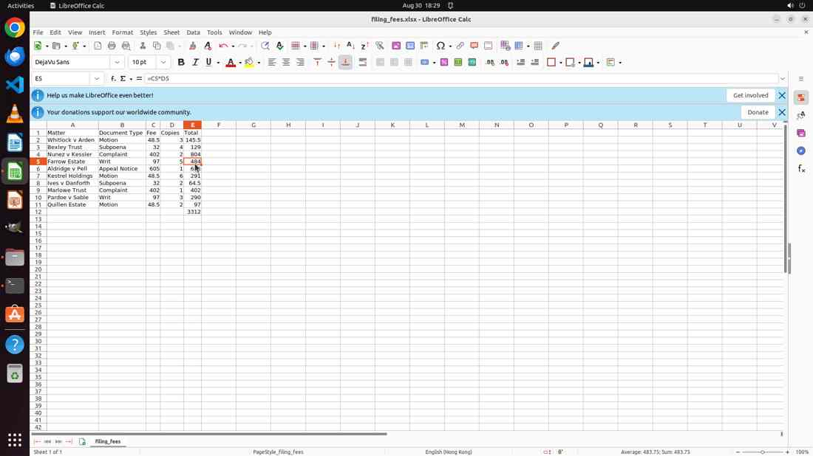
step 29 10:29:45
THINKINGConfirmed. The status bar at bottom right shows "Average: 483.75; Sum: 483.75" for the selected E5. So E5 truly holds 483.75 (the cell just displays "484" due to column width). The formula bar shows =C5*D5. Everything is correct.
So all values are stored properly with full cent precision. Grand total E12 = 3312.00.
Now I need to save the file. The task says "finish this filing sheet" - I should save to persist. Ctrl+S, and since it's xlsx, keep the format (click "Use Excel 2007-365!").
Let me save.
ACTIONConfirmed: the status bar shows E5 = 483.75 (the cell just displays "484" due to narrow column width). All values are stored with full cent precision, and the grand total E12 = 3312.00 is correct. Now let me save the file, keeping the xlsx format.
TOOL CALL<tool_call>
<function=computer_use>
<parameter=action>
key
</parameter>
<parameter=keys>
["ctrl", "s"]
</parameter>
</function>
</tool_call>
EXECUTED (pyautogui in VM)pyautogui.hotkey("ctrl", "s")
step 30 10:29:54
THINKINGThe save dialog for format didn't appear in this screenshot—maybe it will pop up. Usually saving xlsx prompts a "Keep Current Format" dialog. Let me wait and screenshot to check if a dialog appeared.
ACTIONA format dialog may appear. Let me check.
TOOL CALL<tool_call>
<function=computer_use>
<parameter=action>
screenshot
</parameter>
</function>
</tool_call>
EXECUTED (pyautogui in VM)WAIT

step 31 10:30:14
THINKINGNo format dialog appeared, meaning the file was saved directly (the "Keep format" prompt may have been disabled). The file is saved. The task is complete.
Let me summarize the completed work for the final response.
ACTIONThe filing sheet is now complete and saved. Here's what I did:
**Fee schedule** (from `fee_schedule.txt` in `/home/user/Documents/filings/`), matched on Document Type:
- Complaint = 402.00, Motion = 48.50, Subpoena = 32.25, Appeal Notice = 605.00, Writ = 96.75
**Filling the sheet (rows 2–11):**
| Row | Document Type | Fee | Copies | Total |
|----|----|----|----|----|
| 2 | Motion | 48.50 | 3 | 145.50 |
| 3 | Subpoena | 32.25 | 4 | 129.00 |
| 4 | Complaint | 402.00 | 2 | 804.00 |
| 5 | Writ | 96.75 | 5 | 483.75 |
| 6 | Appeal Notice | 605.00 | 1 | 605.00 |
| 7 | Motion | 48.50 | 6 | 291.00 |
| 8 | Subpoena | 32.25 | 2 | 64.50 |
| 9 | Complaint | 402.00 | 1 | 402.00 |
| 10 | Writ | 96.75 | 3 | 290.25 |
| 11 | Motion | 48.50 | 2 | 97.00 |
- The Fee column (C) was filled by matching each Document Type to the schedule.
- The Total column (E) uses `=Fee×Copies` formulas, so the actual Copies value in each row is used.
- **Grand total in E12 = 3312.00** (via `=SUM(E2:E11)`).
All amounts are exact to the cent (verified, e.g. E5 truly stores 483.75 even though the narrow column displays "484"), and the file has been saved in xlsx format.
EXECUTED (pyautogui in VM)DONE